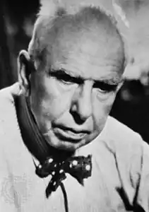

ДРАЙЗЕР, Теодор (Dreiser, Theodore — 27.08.1871, м. Терре-Хот, шт. Індіана — 28.12. 1945, Голлівуд) — американський письменник.Народився у невеличкому містечку Терре-Хот в сім'ї німецьких іммігрантів. Батько, Джон Пол Драйзер, ревний католик, людина працьовита і чесна, належав до розряду невдах. Сім'я злидарювала, у пошуках кращої долі переїжджала з місця на місце, з однієї общини в іншу. Теодор був останньою, дванадцятою дитиною. Матір, Сара Драйзер, жінка неписьменна, але мудра та добросерда, сильна та самовіддана, намагалася скрасити життя сім'ї, але дитячі спогади Драйзера невеселі. Навчання у прихідській школі для сором'язливого тугодума, яким він був тоді, стало справжньою мукою. Він рано почав заробляти на прожиття: був рознощиком газет, розносив білизну, збирав квартирну плату, працював у торговця залізними виробами і сам торгував уроздріб, підсобним робітником на залізниці, мив посуд в одному із ресторанчиків Чикаго. Тут він пройшов свої "університети". У справжньому університеті у Блумінгтоні (штат Індіана) йому пощастило провчитися лише рік завдяки допомозі шкільної вчительки, котра заплатила за його навчання. На початку 1892 р. Д. поталанило влаштуватися репортером у чиказьку "Дейлі ньюс". Змінюються міста та редакції: Сент-Луїс, Клівленд, Пітсбурґ, Нью-Йорк. Розширюється коло тем, він успішно опанував ремесло газетяра. Драйзера включили у бібліографічний довідник 1899 р. "Who's Who in America" з вказівкою професії — письменник-журналіст.
1890-і та 1900-і роки в американській журналістиці були ознаменовані виступами "розгортачів бруду", як згодом із легкої руки Т. Рузвельта назвали письменників, котрі повстали проти традиції "добропристойності" в літературі та прагнули відтворювати життя таким, яким воно було насправді, поставивши в центр своєї програми боротьбу за інтереси "маленької людини". Драйзер пристав до них. Як і всі його ровесники, він зазнав значного впливу еволюціонізму, пережив захоплення соціал-дарвінізмом і прагматичною етикою. Погляди Драйзера зблизили його з письменниками об'єктивного, або натуралістичного, напряму, хоча до жодної школи він не належав і свої шляхи прокладав самостійно. Думка про те, що Драйзер — це "другий Золя", помилкова. Володарем його дум був О. де Бальзак. Найважливіше, чим Драйзер завдячує Бальзакові, це відкриттям домінанти характеру молодої людини, котра стоїть на порозі життя, кидає йому виклик, котра натхненна мрією про успіх.
Переконавшись у тому, що інтерес до життя в американців пов'язаний із нетерплячим очікуванням успіху, Драйзер вирішив досліджувати психологію обділеного та честолюбного "шукача щастя", і об'єктом його зацікавлень стало американське суспільство. Першим кроком на цьому шляху був роман "Сестра Керрі" ("Sister Carrie", 1900), який критика зустріла вороже і він відразу ж був заборонений через "непристойність". У центрі роману — історія юної провінціалки, котра прибула в Чикаго у пошуках роботи. Керрі — дівчина, сповнена непевних бажань, без чітких моральних принципів. Пройшовши етап пошуків роботи та зазнавши нудьги від самої роботи, Керрі стає легкою здобиччю комівояжера Друе, котрого вона незабаром залишить заради Герствуда. Управитель фешенебельного бару Герствуд — єдиний герой Драйзера, котрий зазнав справжньої "трагедії пристрасті", — покидає сім'ю та жертвує становищем заради Керрі, з якою втікає у Нью-Йорк. Тут йому не таланить. У той час як він опускається вниз, Керрі, боячись бідності, починає шукати для себе шлях угору сама. Несподівано вона відкриває в собі артистичний талант. Він допомагає їй висловити притаманну всім людям тугу за ідеалом. Ніжність, яка жила у глибинах її душі і, очевидно, вабила до неї Герствуда, не завадила їй його залишити. У той час як Герствуд, ставши жалюгідним злидарем і вирішивши, що "гра закінчена", наклав на себе руки у брудній нічліжці, Керрі, з артистки кордебалету перетворившись у зірку естради, у розкішному номері гостини-ці "Волдорф" читає роман О. де Бальзака. Вибір Драйзера "Батька Горіо" прикметний: драма Герствуда схожа на трагедію цього "буржуазного короля Ліра". Драйзер був першим, хто сказав американцям: "Ось ви які!" Критиків обурило те, що його героїня уникла кари. Драйзер публічно визнали "ганьбою Америки", і перед ним зачинилися двері більшості журналів. За три роки заледве поталанило опублікувати декілька статей. Матеріальна скрута змусила його повернутися до фізичної праці на залізничній колії. 1905 рік він знову зустрів у редакторському кріслі. Драйзер — співробітник компанії "Баттерік паблікейшнс", у його віданні три жіночі журнали, де поряд із рекламою мод, фасонами та викрійками публікувалася всіляка всячина про дім і сім'ю. Драйзер водночас співпрацював з "розгрібачами бруду". Журналістика стала доброю школою, де виховався мужній талант Драйзера-романіста. У 1911 р. вийшов друком другий роман Драйзера, розпочатий ним десять років тому, тепер він називався "Дженні Ґерхарт" ("Jennie Gerhardt"). В основі сюжету двох його перших романів — реальні факти із життя сестер письменника. "Дженні Герхардт" — це своєрідне дзеркальне відображення "Сестри Керрі". Дженні також походить із бідної сім'ї, і зваблює її, як і Керрі, людина з вищих кіл. Але Дженні, на відміну від Керрі, байдужа до багатства, вона створена для глибокого та вірного кохання. Після виходу "Дженні Ґерхардт" Драйзер розпочав роботу над масштабним романом про бізнес. Ця тема віддавна цікавила його як журналіста. На початку століття йому доводилося брати інтерв'ю у мільйонерів Карнегі, Армора, Філда, писати нариси про монополістів, некоронованих королів США. Свого часу його вразила історія Ч. Йеркса, котрий, розпочавший трамвайної афери та в'язниці у Філадельфії, пізніше "завоював" Чикаго, Нью-Йорк і Лондон і став мультимільйонером. Драйзер заповзявся вивчити біографію Йеркса та інших "династій неотесаних вискочок". Він навіть перетнув Атлантику, щоб мати уявлення про європейське оточення Йеркса, котрий став прототипом Франка Каупервуда. В особистості Йеркса Драйзера приваблював розмах, те, що він утверджувався не лише в бізнесі, а й у коханні та мистецтві. Під час роботи задум розростався, виникла ідея трилогії. У 1912 р. з'явилася її перша частина — "Фінансист" ("The Financier"), у 1914 вийшла друга — "Титан" ("The Titan"), а згодом і заключний роман — "Стоїк" ("The Stoic"). Драйзер досліджує анатомію та філософію Успіху. Показавши зсередини роботу розуму та душі свого героя, письменник прослідковує етапи його перетворення в "титана". Роман побудований як біографія Каупервуда, своєрідне життя фінансового магната. Головний герой — фінансист-філософ, що надає йому масштабності та величі. У поглядах Каупервуда на життя та людину, у його роздумах і міркуваннях про смисл існування прослідковуються постулати філософських та інших наукових доктрин, якими захоплювався сам Драйзер. Інтелектуальні пошуки Каупервуда роблять його до певної міри двійником автора. Титанізм, або демонізм, Каупервуда споріднює його з "надлюдиною" Ф. Ніцше, оскільки він підвладний лише одному закону — закону власних бажань. Багатство — не мета, а засіб, що дозволяє Каупервуду жити, керуючись девізом: "Мої бажання понад усе". З часом його бажання набувають більш метафізичного характеру, зростає його "душевний і духовний голод", потяг до краси як до передвісниці істини. Пошуки "втіленого ідеалу", врешті-решт, приводять його до Береніс, у котрій поєднуються дві основоположні ілюзії — кохання та мистецтво. "Жах і диво" життя, на думку Драйзера, полягає в тому, що індивідуальність реалізується в ілюзії, яка є єдиною реальністю. Жертвою цього трагічного парадоксу стає Каупервуд. Зацікавленість Драйзера наукою, мистецтвом, соціальними теоріями звела його в довоєнні роки з бунтівними мешканцями Гринвіч-вілледжу, завсідників якого С. Льюїс влучно назвав "люмпен-інтелігентами". Тут зустрічалися письменники та художники, агітатори та мислителі, поборники фемінізму та євгеніки. Тут, у Гринвіч-вілледжі, зустрів він героїнь своєї майбутньої "Галереї жінок" ("A Gallery of Women", 1929). Багато чого з побаченого та почутого тут Драйзер переніс на сторінки "Титана" і, особливо, нового роману. "Геній" ("The Genius", 1915) — книга про природу мистецтва та роль художника. Юджин Вітла — головний герой, як свого часу Френк Каупервуд, викликає неприязнь і роздратування навколишніх своєю яскравою індивідуальністю. Юджин Вітла — обдарований художник. Драйзер відважно порушив існуючу традицію "добропристойності" в літературі, його герой повстав проти заскорузлості академізму та салонної красивості. Обставини змушують героя взятися за роботу в рекламному агентстві. Ставши респектабельним членом суспільства, Вітла зраджує самого себе. Творча криза поглиблюється душевною: одружений (до того ж, дружина вагітна), він закохується у юну дівчину. Гордіїв вузол розв'язується трагічно: помирає під час пологів дружина, залишивши йому дочку; покидає його і Сюзанна. Юджина Вітла спочатку охоплює апатія. Вихід із кризи пов'язаний із зацікавленням теософією, релігійними культами містичного штибу, філософією. Під час шукань він відкриває нову сферу — "велике мистецтво снів", де сон рівнозначний "ілюзії". Юджин Вітла доходить того ж висновку, що й Френк Каупервуд: справжня реальність перебуває поза межами і лише мистецтво здатне її змінити. Через рік після виходу роману "Західне товариство з боротьби з пороком" добилося його заборони. На захист "Генія " виступили багато письменників, зокрема Д. Лондон, С. Льюїс, Г. Веллс, А. Беннет.У 10—20-х pp. набрав сили яскравий публіцистичний талант Драйзера. Він видав дві книги нарисів — "Сорокалітній мандрівник" ("A Traveller at Forty", 1913) і "Канікули уродженця Індіани" ("A Hoosier Holiday", 1916), де подорожні нариси (він мандрував Англією, Францією, Німеччиною у 1911 p., а згодом перетнув усю Америку) поєднані зі спогадами та роздумами письменника про сучасність, суспільство, особистість і мистецтво. Прикметно, що одночасно з роботою над "Титаном "і "Генієм "він накидав план багатотомної автобіографії. У 1916 р. завершив її перший том "Світанкова зоря" ("Dawn").